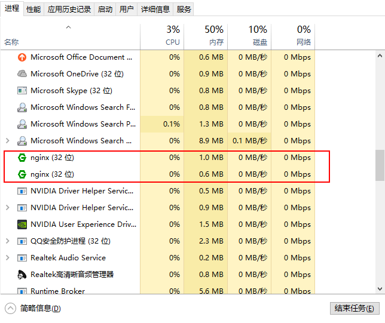

nginx
正向代理与反向代理
正向代理
A同学在大众创业、万众创新的大时代背景下开启他的创业之路，目前他遇到的最大的一个问题就是启动资金，于是他决定去找马云爸爸借钱，可想而知，最后碰一鼻子灰回来了，情急之下，他想到一个办法，找关系开后门，经过一番消息打探，原来A同学的大学老师王老师是马云的同学，于是A同学找到王老师，托王老师帮忙去马云那借500万过来，当然最后事成了。不过马云并不知道这钱是A同学借的，马云是借给王老师的，最后由王老师转交给A同学。这里的王老师在这个过程中扮演了一个非常关键的角色，就是代理，也可以说是 正向代理 ，王老师代替A同学办这件事，这个过程中，真正借钱的人是谁，马云是不知道的，这点非常关键。
我们常说的代理也就是只正向代理，正向代理的过程，它隐藏了真实的请求客户端，服务端不知道真实的客户端是谁，客户端请求的服务都被代理服务器代替来请求，某些科学上网工具扮演的就是典型的正向代理角色。用浏览器访问 http://www.google.com 时，被残忍的block，于是你可以在国外搭建一台代理服务器，让代理帮我去请求google.com，代理把请求返回的相应结构再返回给我。
反向代理
大家都有过这样的经历，拨打10086客服电话，可能一个地区的10086客服有几个或者几十个，你永远都不需要关心在电话那头的是哪一个，叫什么，男的，还是女的，漂亮的还是帅气的，你都不关心，你关心的是你的问题能不能得到专业的解答，你只需要拨通了10086的总机号码，电话那头总会有人会回答你，只是有时慢有时快而已。那么这里的10086总机号码就是我们说的 反向代理 。客户不知道真正提供服务人的是谁。
反向代理隐藏了真实的服务端，当我们请求 baidu.com 的时候，就像拨打10086一样，背后可能有成千上万台服务器为我们服务，但具体是哪一台，你不知道，也不需要知道，你只需要知道反向代理服务器是谁就好了，baidu.com 就是我们的反向代理服务器，反向代理服务器会帮我们把请求转发到真实的服务器那里去。Nginx就是性能非常好的反向代理服务器，用来做负载均衡。
举例
很久以前老王去饭店吃饭，需要先到饭店，顾客和老板面对面结算。 后来产生了外卖（代理），老板不知道顾客是谁。顾客可以点餐，由外卖小哥送到 由于饭店饭菜美味，人太多了，老板打算开连锁店（反向代理），顾客只需要打400-xxx-7777电话就能吃到饭，不知道饭菜具体是哪家连锁店送的。
nginx 下载安装
1.到官网下载nginx 官网指路
2.解压到你喜欢的目录，执行exe文件启动
3.在任务管理器中找到nginx.exe

4.在浏览器中输入127.0.0.1 会看到欢迎使用nginx界面
nginx 相关命令
start nginx.exe //启动
nginx.exe -s stop //停止nginx
nginx.exe -s reload //重新加载nginx
nginx.exe -s quit //退出nginx